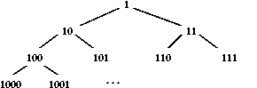
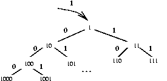

A priority queue is a data structure that is meant to hold objects that require ``service'' (e.g., use of a printer). The essential operations are:
Here is an example, where string objects are inserted with priority numbers:
insert(8, "abc")
insert(3, "def")
insert(4, "ghi")
retrieve() ("def" is returned)
insert(2, "jkl")
retrieve() ("jkl" is returned)
insert(4, "mno")
retrieve() ("ghi" is returned)
retrieve() ("mno" is returned)
At this point, the priority queue still holds "abc",
whose low priority has prevented it from leaving.
As usual, we require an implementation of a priority queue where insertion and retrieval take time that is less than linear, in terms of the number of objects held in the queue. Since there is an implicit ordering involved with insertion, we might try writing some variant of a traditional queue that sorts its elements on insertions. Alas, this will produce greater than linear-time behavior. Since the priority numbers are not sequences of symbols, the spelling-tree technique is not suited for the job. We require a new approach.
A binary tree is complete if
a c
/ \ / \
b c b a
/ \ / \ / \ / \
d e f . d . . .
/\ /\ /\ / \
. . .. . . . .
Note that the shortest paths in the trees are the ones on the trees' right.
In contrast, these trees are not complete:
a c
/ \ / \
b c b a
/ \ / \ / \ / \
d e f . . . d .
/\ /\ /\ / \
. g .. . . . .
/\
. .
You can consider a complete tree as a tree where insertions must be
added in a fixed, left-to-right order, much like laying bricks:
1
/ \
2 3
/ \ / \
4 5 6 *
/\ /\ /\
+ . .. . .
The leaf marked by the asterisk is the position for the next insertion,
the leaf marked by the plus symbol is the position after that, etc.
Next, a complete binary tree has the heap-order property if, for every node, N, within the tree, the priority number of the value held within node N is less-than-or-equals all priority numbers held within N.left() and all priority numbers held within N.right().
Here is an example of a complete tree with the heap-order property, where each node holds a priority number, object pair.
2,r
/ \
7,m 3,q
/ \ / \
9,p 12,k 6,w .
/\ /\ /\
. . .. . .
Check each node---the number at a node is less-or-equals to all the
numbers ``below'' it in the tree. This means the smallest number
must be at the root.
Although this tree is heap-ordered, it is not an ordered tree (binary search tree) --- note where 3 is positioned, say, relative to 2 and 7. This fact will be exploited to devise a fast algorithm for insertion.
To insert num, ob into heap, h:
2,r
/ \
7,m 3,q
/ \ / \
9,p 12,k 6,w 1,s
/\ /\ /\ /\
. . .. . . . .
This is a complete tree but is not heap-ordered. To restore the latter
property, we must make 1,s ``bubble up'' to its appropriate
position. First, we note that 1 is less than 3,
the priority number of the new node's parent, so we exchange nodes:
2,r
/ \
7,m 1,s
/ \ / \
9,p 12,k 6,w 3,q
/\ /\ /\ /\
. . .. . . . .
An examination of the new parent to 1,s shows that another
exchange is warranted, giving us:
1,s
/ \
7,m 2,r
/ \ / \
9,p 12,k 6,w 3,q
/\ /\ /\ /\
. . .. . . . .
At this point, the tree is heap-ordered.
If the heap is empty, this is an error. Otherwise:
3,q
/ \
7,m 2,r
/ \ / \
9,p 12,k 6,w .
/\ /\ /\
. . .. . .
Step 3 says that 3,q must be exchanged with its children,
as necessary, to restore heap-ordering. Here, 3,q is
exchanged with 2,r, giving us:
2,r
/ \
7,m 3,q
/ \ / \
9,p 12,k 6,w .
/\ /\ /\
. . .. . .
Only one exchange is needed. s is returned.
The challenging aspect of implementing a heap structure lies in remembering which node is the deepest, rightmost, and which leaf is the shallowest, leftmost. Both of these notions are tied to the count of objects held in the heap: If we number the positions of the heap in binary numbering,
then the shallowest, leftmost leaf is the position that is one plus the count of objects in the heap, and the deepest, rightmost node is located at the position that is exactly the same as the count of objects in the heap.
Since each binary numeral indicates a path from the root of the heap to the position numbered by it,
we can easily locate the leftmost leaf and rightmost node with simple binary arithmetic, where the calculation of the binary numeral and the path traversal based on the numeral both take on the order of log2N time.